How does neck deviate from a vertical axis?
To examine how a neck deviates from a vertical axis we have to look at a plane number 6 in our 4th data model. The 6th plane uses a reconstructed NECK marker (placement on a back bottom of the head where the head joins the neck) and is orthonormal to a line between NECK and C7 markers. Possible deviations from the vertical axis can occur in two planes – one that reflects posterior-anterior tilt and one that reflects lateral tilt. Thus we need to check elevation angels for planar points ‘sp’ and ‘su’ that are used to define ‘spinal planes’ in our data. Here ‘sp’ points correspond to forward direction and ‘su’ points to a left-hand direction.
In our set up there is some uncertainty about position of markers relative to individual bodies because of the manual placement but also because of the idiosyncrasies and anatomical variations across individuals. Thus as an approximate reference we should provide angle values that were captured in the beginning of the form than a person is in a standing position. Below we refer to this time point as ‘2001’ frame.
Summary. Posterior-anterior tilt of the neck
If we take the straight standing posture in the beginning of a performance (event code 2001) as reference for the ‘normal’ anterior angle of the neck then we can say that during the 2nd step of the form neck is tilted forward in both groups around 3.4 degrees in 1st group and 5 degrees in the 2nd with a standard deviation about 7 degrees.
The overage values than data is grouped by trial identities or 11 sub-movements are about -16 degrees for both groups. Than we look at two intervals with the symmetrical movement we see behaviour similar to the head motion in sagittal plane. In most trials time series of the 1st and 2nd intervals seem to be correlated but amplitudes can be scaled.
Neck, anterior tilting >> 11 sub-movements
| mean | sd | sem | n | NAs | max | min | |
|---|---|---|---|---|---|---|---|
| 1st group | -15.94 | 7.183 | 0.0297 | 58527 | 0 | 0.3382 | -36.97 |
| 2nd group | -16.31 | 7.045 | 0.0333 | 44872 | 0 | 1.127 | -34.3 |
| 2001-1st | -12.51 | 6.25 | 1.67 | 14 | 0 | -6.077 | -26.82 |
| 2001-2nd | -11.27 | 5.596 | 1.687 | 11 | 0 | -2.909 | -19.57 |
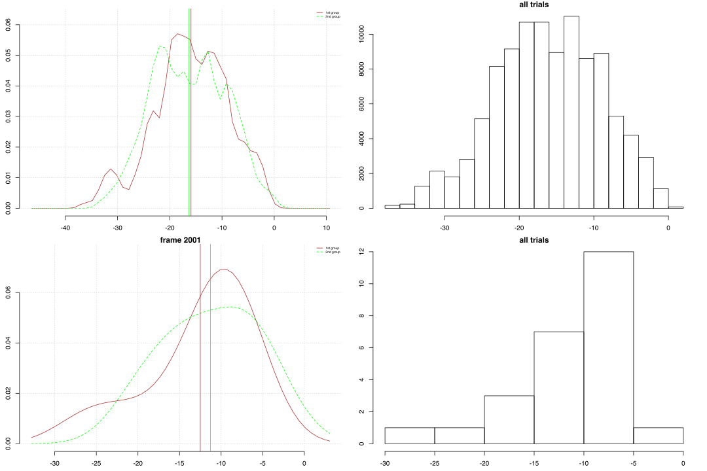
Summary. Lateral tilt of the neck
In the case of lateral deviations we would expect angles around zero with tilting to sides as a reaction to a movement. On average neck seems to be tilted about 7 and 2 degrees to the right side in 1st and 2nd group respectively. The range of values and standard deviation are quite large (+/- 50 degrees and about 20). The ‘normal’ lateral angle of the neck seems to be right biased by about 1 degree in the 1st group.
The lateral angles that are grouped by the trial identities suggest that there might be a right bias that was introduced by the movement but also individual biases towards the right side. However if we look at angles that are grouped after the 11 sub-movements we can notice that tilting to the left is present in the 5th to 8th sub-movements whereas the rest of the motion show a tilting towards right side.
Furthermore, individual time series for the two time intervals with the symmetrical movements suggest a strong relation between changes in lateral orientation of the head and a direction of the stepping. Similarly to the lateral angles of the head, in most trials we can see that time series of the 1st and 2nd intervals are mirrored about the horizontal lines.
Neck, lateral tilting >> 11 sub-movements
| mean | sd | sem | n | NAs | max | min | |
|---|---|---|---|---|---|---|---|
| 1st group | 7.285 | 23.16 | 0.0957 | 58527 | 0 | 59.43 | -56.88 |
| 2nd group | 2.256 | 19.71 | 0.093 | 44872 | 0 | 54.43 | -47.2 |
| 2001-1st | 1.367 | 5.607 | 1.499 | 14 | 0 | 11.44 | -9.908 |
| 2001-2nd | -0.3026 | 5.567 | 1.678 | 11 | 0 | 9.075 | -8.983 |
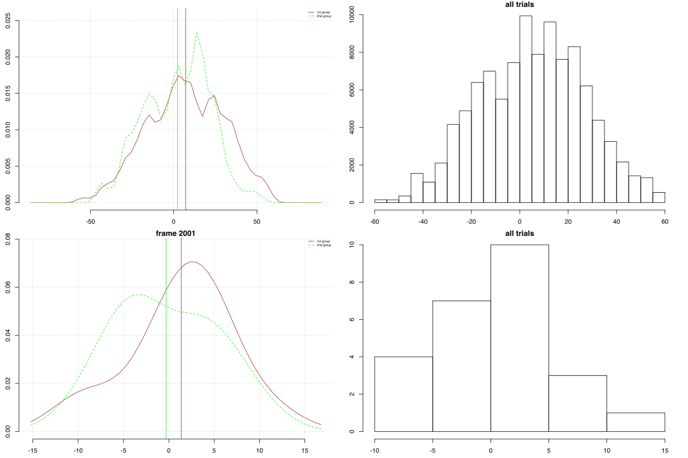
Posterior-anterior tilt of the neck, grouped by id-trials
Below are boxplots of the elevation angles across different trials for the entire 2nd step of the Short Form. Brown color represents the 1st group and green the 2nd. Horizontal axes are given in degrees of the elevation angles so that positive values correspond to a neck position that is turned upwards. The vertical axes represent grouping factor – identity of the trial.
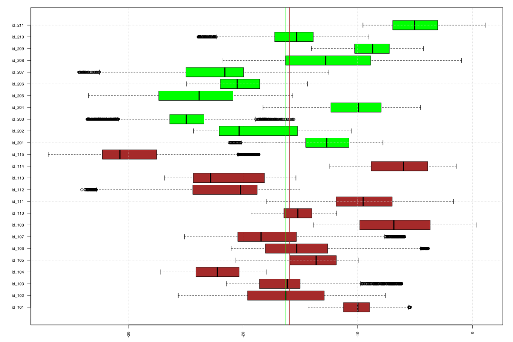
Neck, anterior tilting >> 11 sub-movements
| mean | sd | sem | n | NAs | max | min | |
|---|---|---|---|---|---|---|---|
| 1st group | -15.88 | 6.483 | 1.733 | 14 | 0 | -6.282 | -29.46 |
| 2nd group | -15.95 | 6.649 | 2.005 | 11 | 0 | -4.984 | -25.03 |
Density plots of the angle values for the entire 2nd step (11 sub-movements) grouped by the trial identities. Brown color represents the 1st group and green the 2nd; vertical lines mark mean value of the corresponding trials; blue vertical lines mark the angle values in the beginning of the form.

Lateral tilt of the neck, grouped by id-trials
Below are boxplots of the elevation angles across different trials for the entire 2nd step of the Short Form. Brown color represents the 1st group and green the 2nd. Horizontal axes are given in degrees of the elevation angles positive values correspond to a neck tilted to the right side. The vertical axes represent grouping factor – identity of the trial.
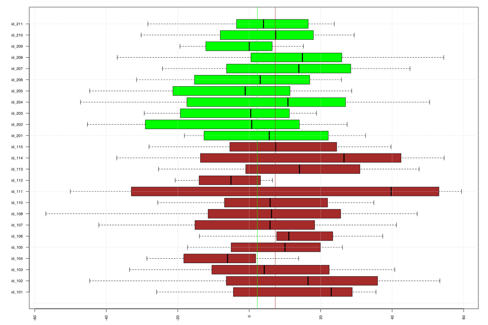
Neck, lateral tilting >> 11 sub-movements
| mean | sd | sem | n | NAs | max | min | |
|---|---|---|---|---|---|---|---|
| 1st group | 7.557 | 7.606 | 2.033 | 14 | 0 | 17.64 | -7.734 |
| 2nd group | 2.625 | 6.166 | 1.859 | 11 | 0 | 12.95 | -5.677 |
Density plots of the angle values for the entire 2nd step (11 sub-movements) grouped by the trial identities. Brown color represents the 1st group and green the 2nd; vertical lines mark mean value of the corresponding trials; blue vertical lines mark the angle values in the beginning of the form.
Notably, the blue vertical lines might indicate individual biases in trials. So ‘id_104’, ‘id_112’, ‘id_202’ trials might be left biased (neck is tilted laterally leftwards) and ’id_105’, ‘id_106’, ’id_113’, ‘id_114’, ’id_115’, ‘id_201’, ’207’ trials might be right biased (neck is slightly tilted rightwards).

Posterior-anterior tilt of the neck, grouped by sub-movements
Also we can look at differences in the angles across the 11 sub-movements without differentiating between individual trials. Again, the brown color represents the 1st group and green the 2nd. Horizontal axes are given in degrees of the elevation angles and the vertical axes represent grouping factor – a number of the sub-movement.
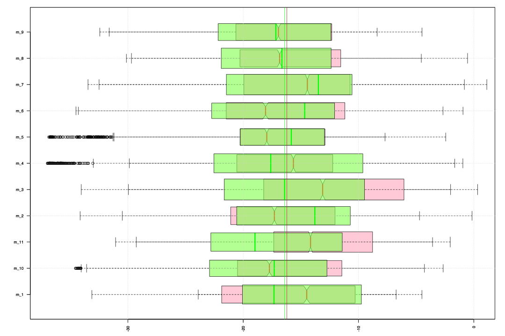
Neck, anterior tilting >> 11 sub-movements
| mean | sd | sem | n | NAs | max | min | |
|---|---|---|---|---|---|---|---|
| 1st group | -16.22 | 1.554 | 0.4685 | 11 | 0 | -13.8 | -18.11 |
| 2nd group | -16.4 | 0.903 | 0.2723 | 11 | 0 | -15.07 | -18.27 |
Density plots of the angle values grouped by the 11 sub-movements. Brown color represents the 1st group and green the 2nd; vertical lines mark mean value of the corresponding sub-movement for 1st and 2nd group. The 2nd and 3rd rows capture a symmetrical motion sequence: from the left into right bow stance and from the right into left.
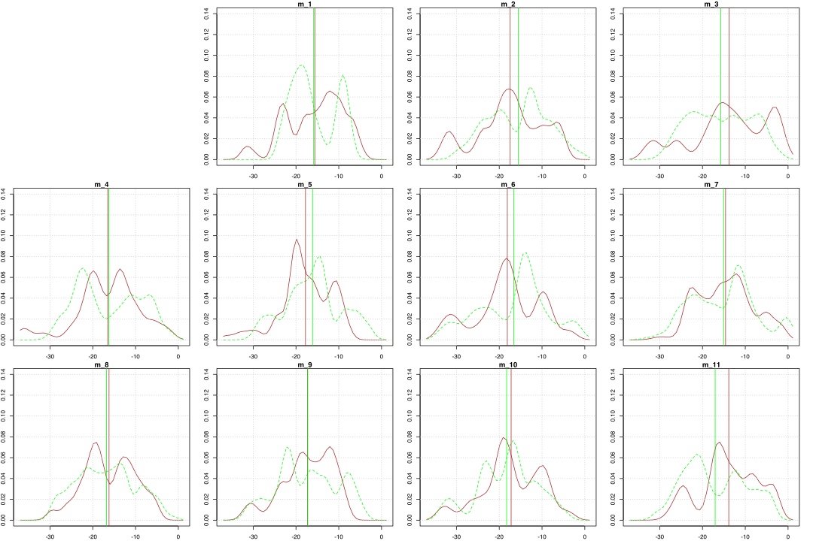
Lateral tilt of the neck, grouped by sub-movements
Also we can look at differences in the angles across the 11 sub-movements without differentiating between individual trials. Again, the brown color represents the 1st group and green the 2nd. Horizontal axes are given in degrees of the elevation angles and the vertical axes represent grouping factor – a number of the sub-movement.
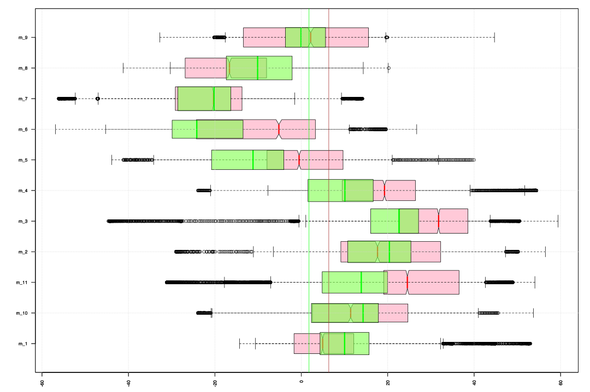
Neck, lateral tilting >> 11 sub-movements
| mean | sd | sem | n | NAs | max | min | |
|---|---|---|---|---|---|---|---|
| 1st group | 6.365 | 17.11 | 5.159 | 11 | 0 | 30.41 | -21.24 |
| 2nd group | 1.792 | 15.4 | 4.643 | 11 | 0 | 19.48 | -22.7 |
Density plots of the angle values grouped by the 11 sub-movements. Brown color represents the 1st group and green the 2nd; vertical lines mark mean value of the corresponding sub-movement for 1st and 2nd group. The 2nd and 3rd rows capture a symmetrical motion sequence: from the left into right bow stance and from the right into left.
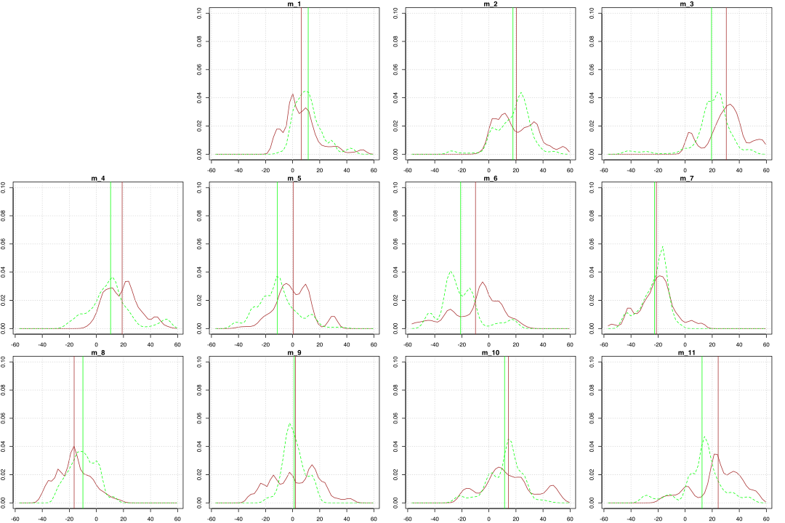
Posterior-anterior tilt of the neck, grouped by id-trials and sub-movements
Below are boxplots for two intervals of the 2nd step that capture symmetrical body motion: from the left to right bow stance and from the right to left bow stance. The boxplots of these intervals are superimposed for each of the trials. The 1st interval is marked by green color and the 2nd by red (color is not associated with groups).
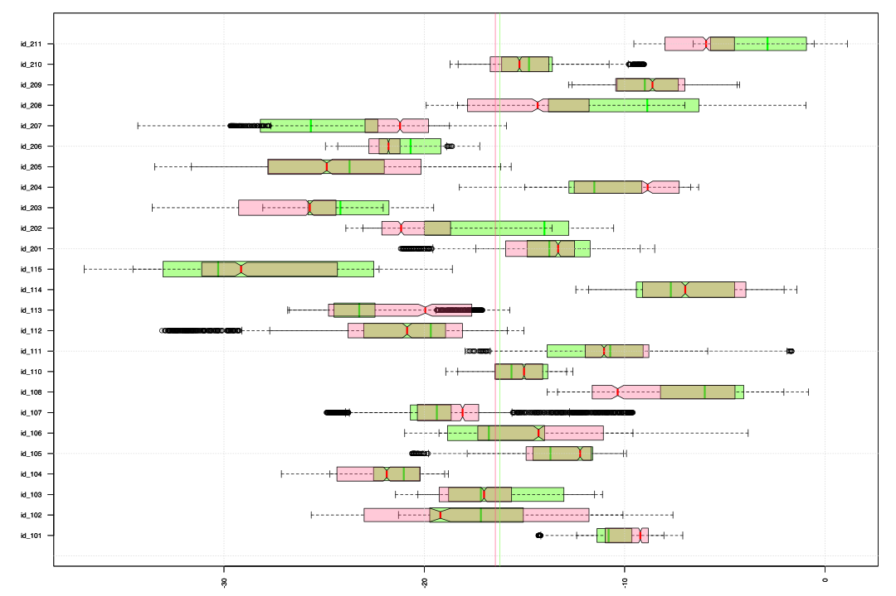
Also, we can differentiate between the different sub-movements within the two intervals and look at them individually. Below are two columns of the boxplots with 4 rows that represent consecutive phases of our two intervals. The 1st column represents the movement from the left to right bow stance (4th - 7th sub-movements), the 2nd column represents the movement from the right to left bow stance (8th - 11th sub-movements).
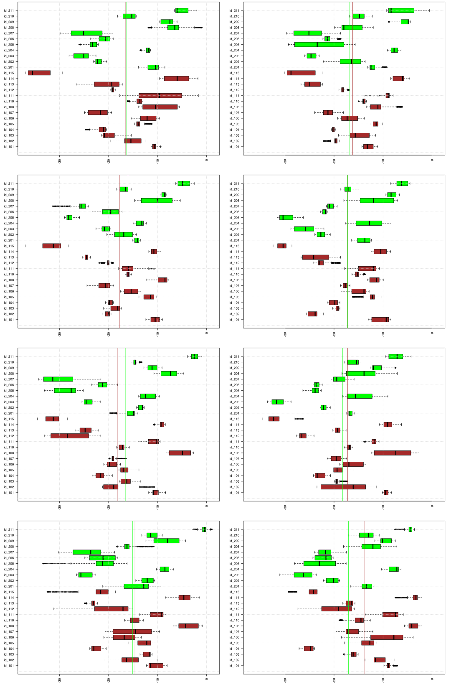
Furthermore we can compare the actual time series for the two intervals. The figure below shows 25 plots for each of the trials with the red color marking the 1st interval and green the 2nd. Vertical lines show boundaries for the four sub-movements within each interval, horizontal lines show means and a blue horizontal line marks the angle value in the 1st frame of the entire performance than a person is in a straight position. Horizontal axis is given in frames with sampling frequency 120 frames per second. Green is for the 1st interval (4-7th sub-movements; left to right bow stance); Red is for the 2nd interval (8-11th sub-movements; right to left bow stance).
We can notice a clear correlation between the two intervals for some trials (e.g. ‘id_101’, ‘id_205’). In trials like ‘id_205’ or ‘id_107’ a timing of sub-movements within intervals is not matching but time series are nonetheless correlated. Similarly, we can see that there are few trials (e.g. ‘id_207’ or ‘id_202’) with a clear shift in the means of the intervals that might reperesent a left/right bias of an individual. It seems that for the most of the trials, anterior deviations of the neck reflect the movement phases but these variations are highly individual.
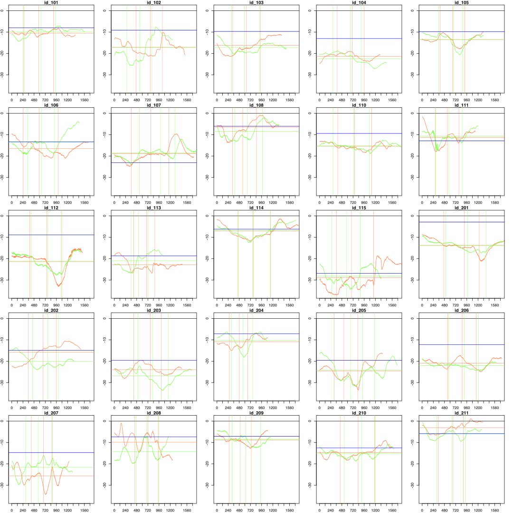
Lateral tilt of the head, grouped by id-trials and sub-movements
Below are boxplots for two intervals of the 2nd step that capture symmetrical body motion: from the left to right bow stance and from the right to left bow stance. The boxplots of these intervals are superimposed for each of the trials. The 1st interval is marked by green color and the 2nd by red (color is not associated with groups).
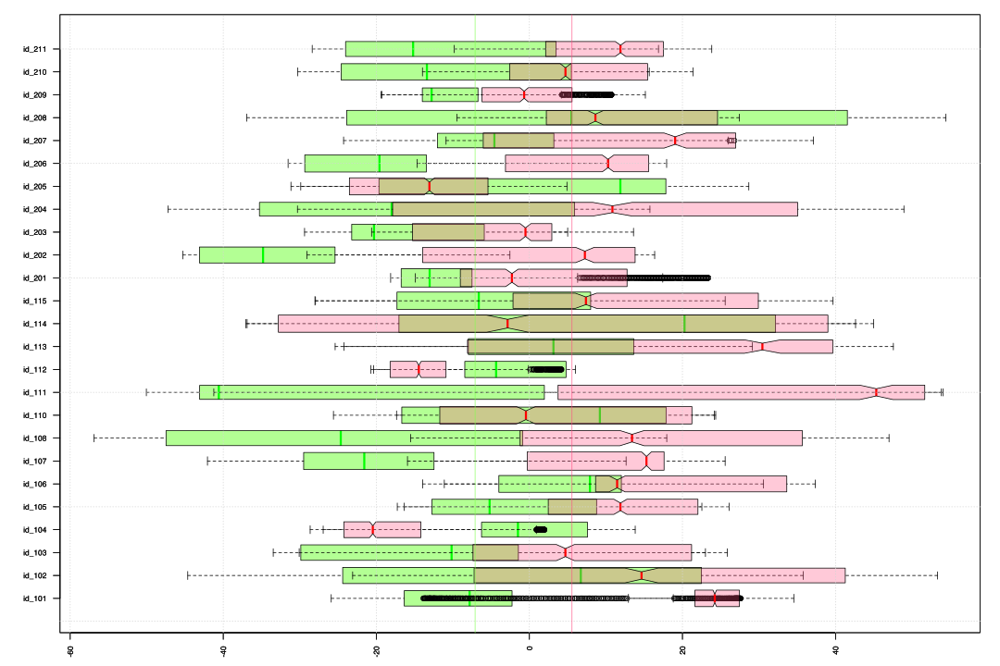
Below are two columns of the boxplots with 4 rows that represent consecutive phases of our two intervals. The 1st column represents the movement from the left to right bow stance (4th - 7th sub-movements), the 2nd column represents the movement from the right to left bow stance (8th - 11th sub-movements).
The 1st sub-movements (1st row: 4th and 8th with the rollback back motion) are clearly showing that weight transfer to a rear leg introduces neck tilt to the side of the rear leg. In the second phase of the intervals (2nd row: 5th and 9th sub-movements) the weight is transferred onto the forward leg after it is turned to 45 degrees outside. In the student group we see that neck is laterally turning to the side of the forward leg but in the 1st interval (left to right bow stance) 2nd group seems to ‘overshoot’ towards left side. In the 3rd phase of the intervals (3rd row: 6th and 10th sub-movements) there is a mid-swing stance and neck is tilted further towards the side of the support leg. And in the final phase of the intervals (4th row: 7th and 11th sub-movements) neck continues to be tilted towards the side of the forward leg that bears most of the body weight.
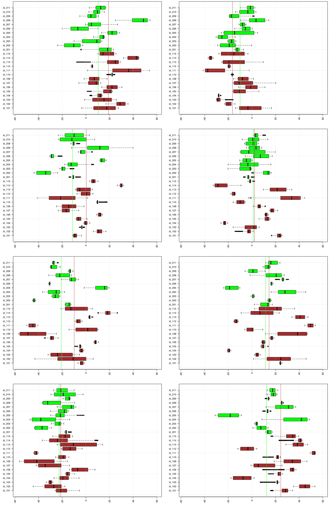
Furthermore we can compare the actual time series for the two intervals. The figure below shows 25 plots for each of the trials with the red color marking the 1st interval and green the 2nd. Vertical lines show boundaries for the four sub-movements within each interval, horizontal lines show means and a blue horizontal line marks the angle value in the 1st frame of the entire performance than a person is in a straight position. Horizontal axis is given in frames with sampling frequency 120 frames per second. Green is for the 1st interval (4-7th sub-movements; left to right bow stance); Red is for the 2nd interval (8-11th sub-movements; right to left bow stance).
Similarly to the lateral angles of the head, in most trials we can see that time series of the 1st and 2nd intervals are mirrored about the horizontal lines.